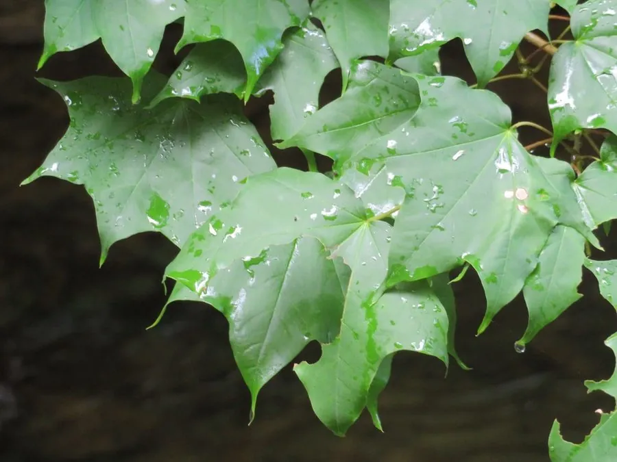

乔木 · 植物界
五角枫 Acer pictum

中国北方的落叶乔木，叶片掌状五裂，秋季叶色金黄，木材细致，是东北林区重要的用材与观赏树种。
- 分类
- 门被子植物门纲木兰纲目无患子目科槭树科属槭属
- 栖息环境
- 海拔 2000 米以下的山地，喜光耐寒
- 地理分布
- 中国东北、华北及西北山地，朝鲜半岛、日本、俄罗斯远东也有分布
- 保护级别
- 暂无评估；中国未列入国家重点保护野生植物名录
物种志
五角枫为落叶乔木，高可达 20 m，树皮灰褐色、纵裂；叶片掌状 5 裂，裂片三角形至卵形，先端渐尖，叶基心形，叶柄长。花期 4–5 月，伞房花序顶生，花小、黄绿色；双翅果黄褐色，两翅开张呈钝角，成熟后随风传播。
五角枫分布于中国东北、华北及西北山地，也见于朝鲜半岛、日本、俄罗斯远东，喜光、耐寒，适宜深厚肥沃、排水良好的土壤，是温带针阔混交林的重要树种。木材细致、纹理美观，可供建筑、家具、乐器与细木工用；树皮纤维可制绳、造纸；秋叶金黄，是北方山地重要的秋色叶树种。五角枫与元宝槭外形相似，但五角枫叶裂更深、翅果张开角度更大。
形态与习性
- 株高可达 20 m，树皮纵裂
- 花期4–5 月，伞房花序顶生
- 果期9–10 月，双翅果
- 光照喜光，不耐长期荫蔽
- 土壤深厚肥沃、排水良好的壤土
- 主要用途建筑与乐器用材、秋色叶观赏
趣味知识
- 五角枫的叶片掌状五裂，秋季变为金黄色，是北方山区著名的秋色叶树种。
- 五角枫木材细致，可制作乐器与精细木器。
- 五角枫与元宝槭外形相似，但五角枫叶裂更深、翅果张开角度更大。